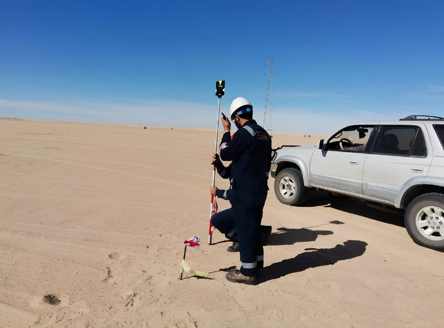
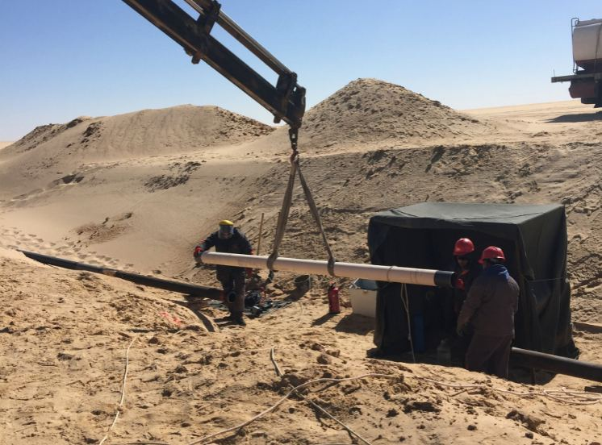
Sarir Flowline Programme
38 km · 6-inch · 14 wells
Installation and replacement of approximately 38 km of flowlines serving 14 producing wells.
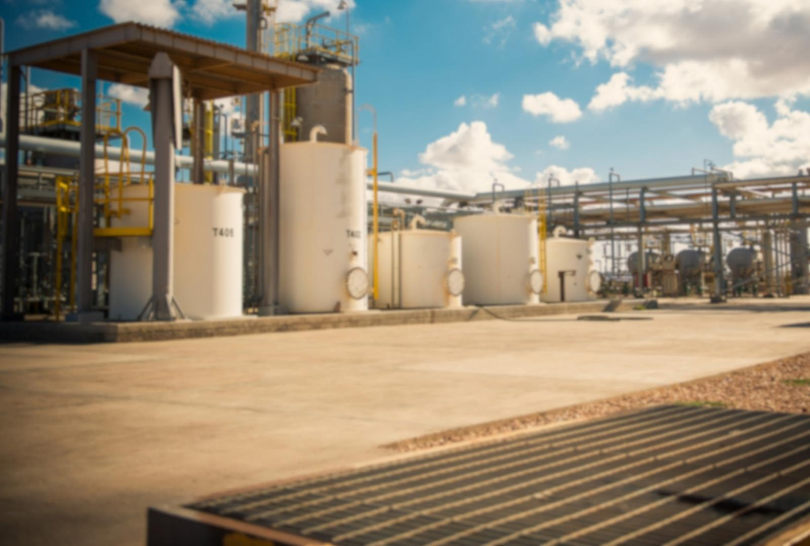
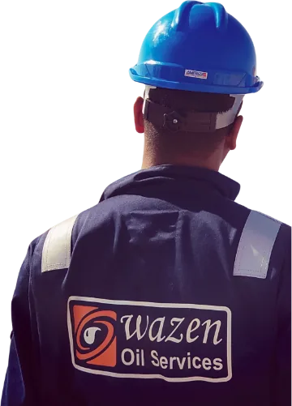
From storage tanks and flowlines to multidisciplinary production facilities, Wazen constructs and rehabilitates the infrastructure that keeps Libya’s energy operations moving.


Installation and replacement of approximately 38 km of flowlines serving 14 producing wells.
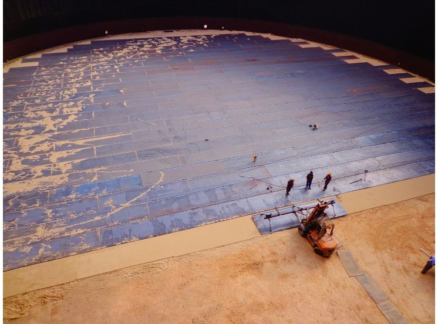
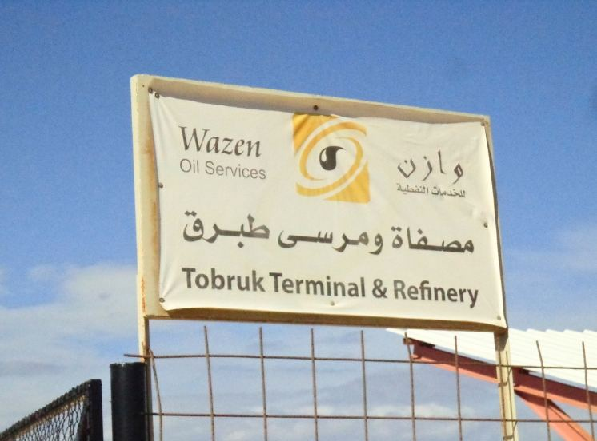
Refurbishment of two crude storage tanks including complete floating-roof and bottom-plate replacement.
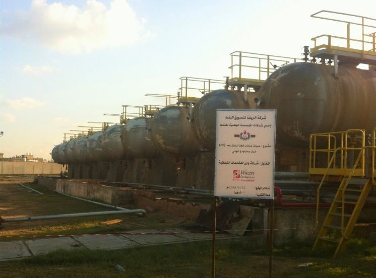
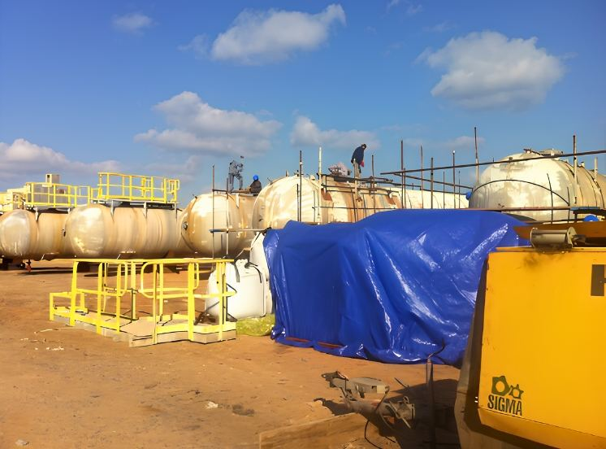
Maintenance programme to restore and recover 20 LPG storage tanks.
Wazen combines international technology with local engineering and field execution to integrate metering, monitoring, control and production systems into operating assets.
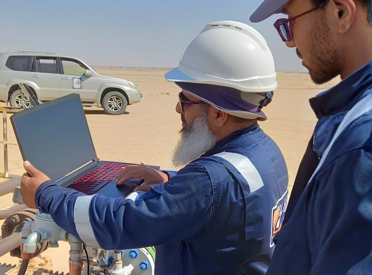
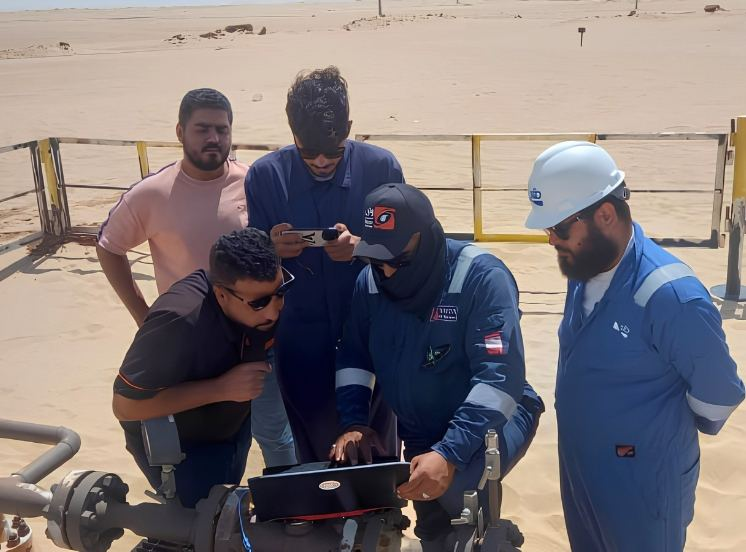
Engineering and installation support to integrate liquid-metering systems, provers, sampling & analysis equipment & control systems.
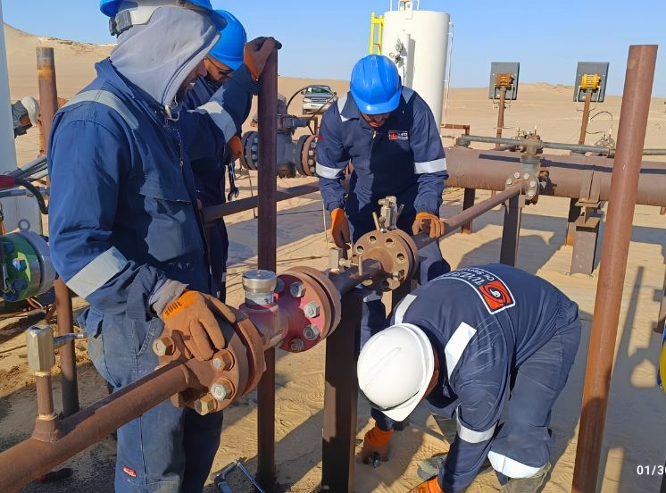
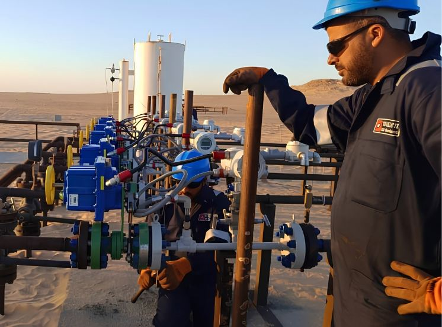
On-the-ground field integration of digital well-monitoring technology to support remote production tracking for operational visibility across distributed assets.
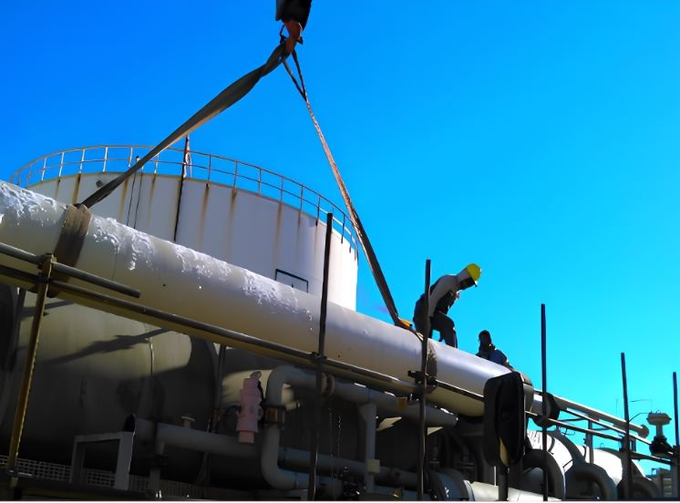
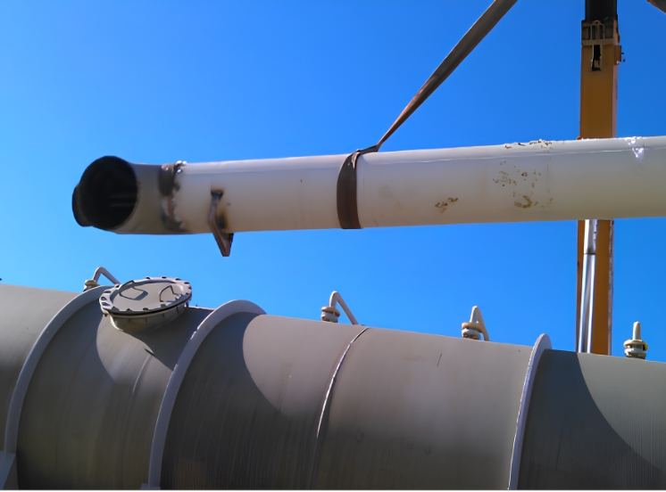
Integration of specialist thermal equipment to replace 24" steam thermo-compressor, including custom fabrication of protection cover to ensure safe, accessible inspection and refinery integration.
Long-term maintenance, rehabilitation and production support delivered by field teams positioned close to Libya’s operating assets.
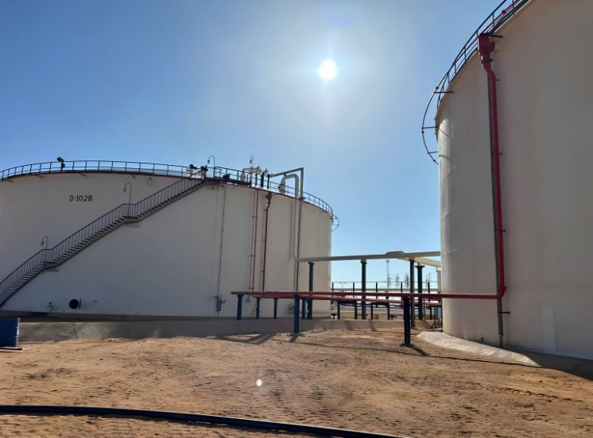
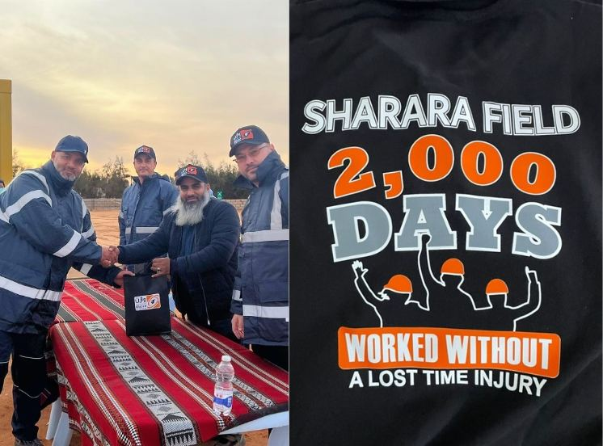
Ongoing field support to increase operational production capacity and perform maintenance, heavy rehabilitation, and infrastructure works across critical storage tanks, flowlines, trunklines, and associated field facilities.
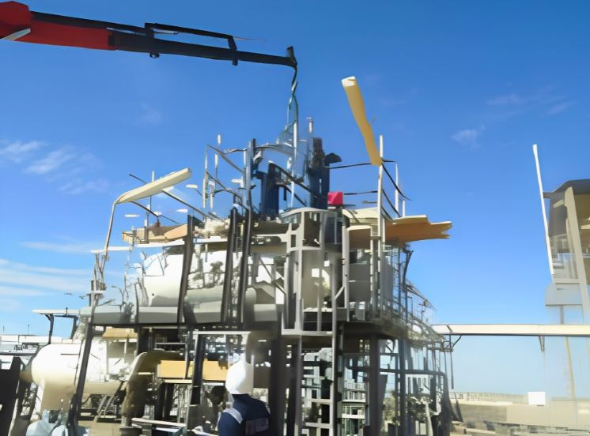
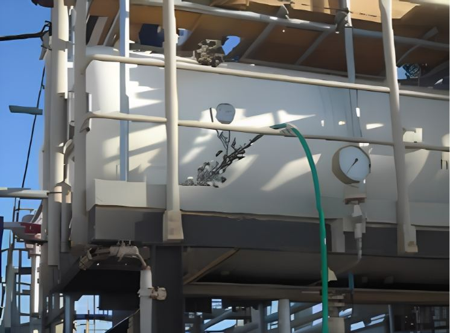
Delivered long-term maintenance works for critical production facilities. Scope encompassed complex separator cleaning and repair, insulation, inspection support, and full site rehabilitation services across multiple remote assets.
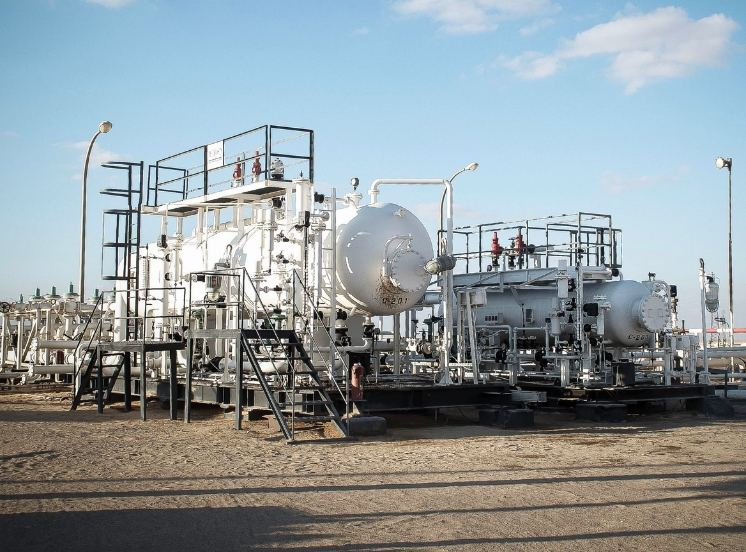
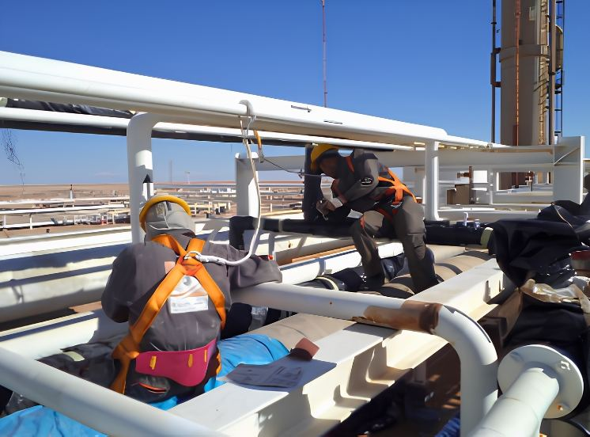
Executed targeted maintenance and heavy rehabilitation works across core production facilities to ensure the operational integrity of critical separators, water storage tanks, and power-plant areas.
Our project history has allowed us to develop an expansive footprint across Libya that supports our operations today. Close to the fields, facilities and assets where our clients need us.
Partner with the local enabler that understands and meets your operational requirements and international standards.